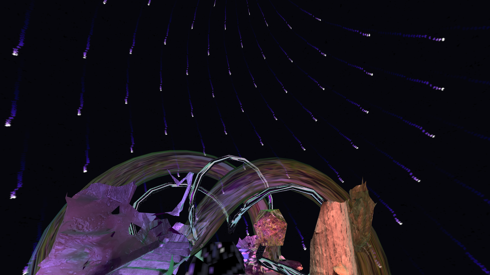
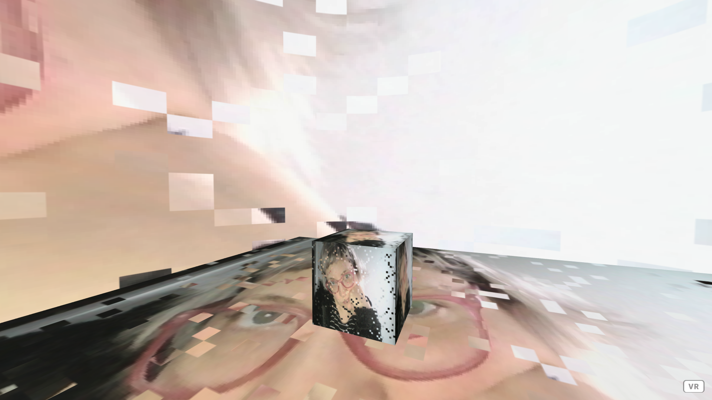

work

Desembocadura, instalacion en webVR
Desembocadura , la boca del río, vertiente al mar. Voy dejando fragmentos digitales de recuerdos en un éter virtual. Sedimentos glitcheados rebalsan o se hunden.

lol-cam
webvr cam installation
.jpg)
Hydra slit-scan camera
Hecho con Hydra de Olivia Jack por Flor de Fuego para FEID Facultad de Artes UNLP
Consuelo - [Yecto + Flor de Fuego]
Audiovisual realizado en colaboración con Yecto para el festival Dérapage 2021, Montreal.
PhillyAV Monthly Quarterly Broadcast // Wine Dive with visuals by Flor de Fuego and Music by Pamela Spark
Live coding performance para Toplap first Transnodal live code Stream 21/02
Ambient [Joanne Armitage + Flor de Fuego]
III - L'Impératrice
FINDE Música: Showcase Amplify: Flor de fuego
set audiovisual de live coding con microsamples de canciones de músicas mujeres latinas

Visuales de live coding para Whisky, Palacio Alsina de Buenos Aires-MUTEK 2019.
Dibujando con codigo en tiempo real
Proyectos colaborativos
c0d3 p03try

c0d3_p03try = ["flor de fuego", "rapo"]